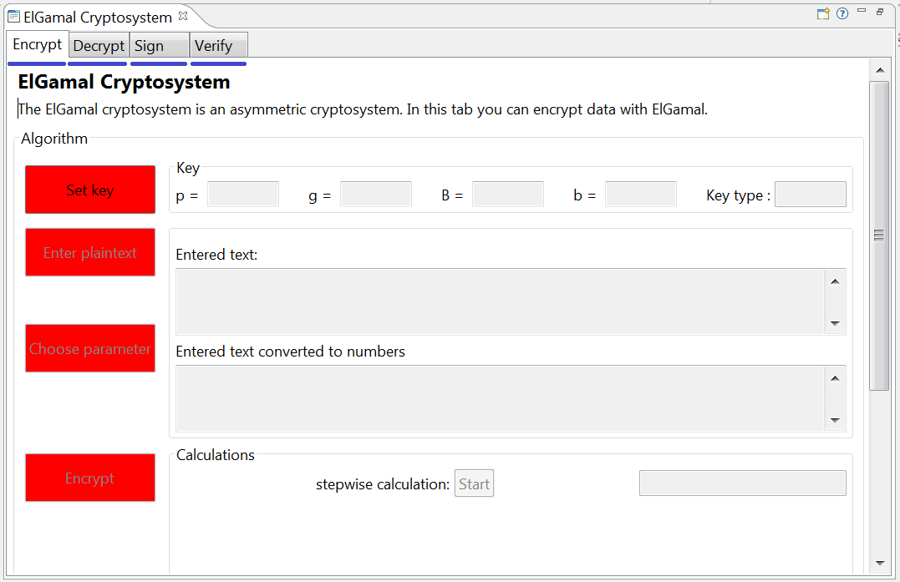
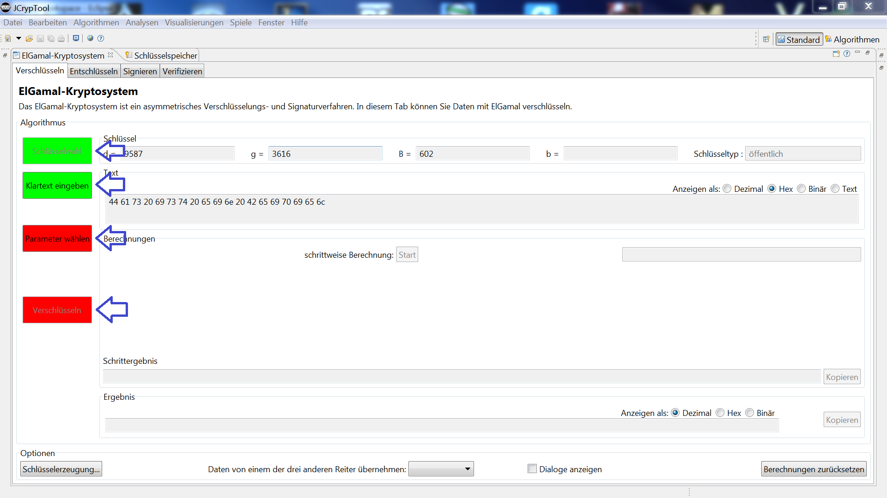
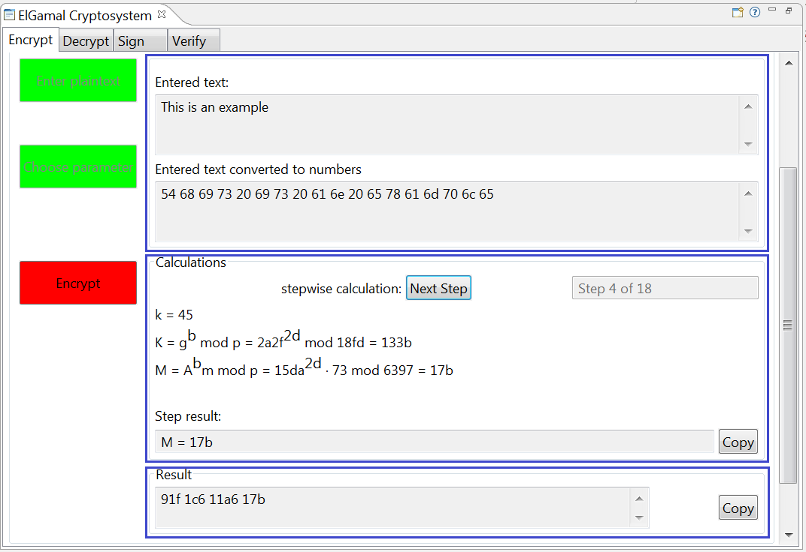

This help file describes two things:
1) The ElGamal Scheme (Algorithm)
2) Handling Instructions: How to Use this Visualization
The ElGamal Cryptosystem is there in two different ways: for encryption and for signing.
The ElGamal encryption scheme is an asymmetric encryption scheme which is based on the idea of the Diffie-Hellman key exchange (DH). It was first described by Taher ElGamal in 1985.
The ElGamal signature scheme is a digital signature scheme which is based on the difficulty to compute discrete logarithms. It was first described by Taher ElGamal in 1984.
While the ElGamal signature scheme is rarely used, the ElGamal encryption is widely used as an alternative to RSA encryption. The setup and the generation (of the private and the public key) are the same for both ElGamal schemes. However, encryption and signing work differently. In the opposite to the RSA cryptosystem, ElGamal depends on the difficulty of solving discrete logarithms while RSA depends on the factorization of big numbers. Another difference is, that ElGamal encryption and signing need an additional random session key and so ElGamal is probabilistic, what RSA isn't.
As usual, we use the scenario with Alice sending a message to Bob. For encrypting the message, she needs his public key; for signing it she uses her private key.
Like all asymmetric cryptosystems, the ElGamal cryptosystem uses for each participant (Alice and Bob) a key pair consisting of a public and a private key. The public key can be published. In the encryption case, the public key of the recipient is used for encryption, while the private key of the recipient is used for decryption and must only be known to the recipient of the message. This means that Bob, the recipient of the message, must generate his key pair only once. And afterwards, Alice and everyone else can use his public key to encrypt messages as often as they like and send these encrypted messages to Bob.
In the following we have four sections:
The first two components are used by both ElGamal schemes. The third and fourth component are different for the two schemes ElGamal encryption and ElGamal signature.
ElGamal encryption can be defined over any cyclic group \(G\) with a finite order.
Alice and Bob both use their own cyclic (aka finite) group \(G\) with \(d\) elements (aka the group is of order \(d\)). This group is generated with the generator \(g\) where \(g\) is an element of \(G\). \(d\) is an \(n\)-bit integer. The input for the generation process is normally the security parameter \(n\). All of this data is made public. As \(G\) often \(Z_d = \{ 0, … , d-1 \}\) is used with a prime \(d\).
Note 1: The randomly chosen \(d\) should be large and have a similar size as an RSA modulus (1024 - 4096 bit).
Note 2: The generator \(g\) is a special number and must be a primitive root (aka primitive element) of \(G\).
Note 3: \(d > 256\) must be selected in this plugin. The reason for this is that your input text is saved as Extended ASCII. Extended ASCII consists of 256 characters, each of which must be mapped to an element of the \(G\) group.
The key generation is done only once per subject (participants like Alice and Bob); limited validity of keys is not considered here.
For encryption we need Bob's public key. His key generation works like this:
For the signature of Alice we need Alice's private key. Her key generation works like this:
Note: The values of \(d\) and \(g\) are determined independently by Alice and Bob — for simplicity reasons we omitted for these setup parameters the indices \(A\) and \(B\). For encryption, the values from Bob are needed; for signing the values from Alice are needed.
The ElGamal encryption scheme consists of four sub-steps: the parameter generation (setup), the key generation, the encryption, and the decryption. The first two steps were described above, the actual encryption and decryption follow now.
The encryption algorithm works as follows: To encrypt a plaintext message \(m\) for Bob, Alice uses his public key \(( G, d, g, B )\), and
Note 1: One can easily find \(B^k\) if one knows \(m'\). Therefore, a new \(k\) is generated for every message to improve security. For this reason, \(k\) is also called an ephemeral (or session) key.
Note 2: With Diffie-Hellman key exchange (DH), Alice would send \(A=g^a\) to Bob, so he can create the shared session key as \(S = A^b\). With ElGamal encryption, Alice doesn't use her private key \(a\), but uses the secret session key \(k\) which is also random and secret. The remaining logic is the same.
Note 3: With ElGamal encryption, the ciphertext is twice as long as the plaintext (message expansion).
Note 4: ElGamal encryption is a probabilistic encryption: The ciphertext not only depends on the public key of the receiver but also on a random \(k\). So each time the same plaintext is encrypted using the same public key, the resulting ciphertext should be different.
The decryption algorithm works as follows: To decrypt a ciphertext \((K, M)\) sent to Bob he uses his private key \(b\), and
Note that the decryption algorithm produces the intended message, since \(M \cdot S^{-1} = [m' \cdot g^{(b \cdot k)}] \cdot [g^{(b \cdot k)}]^{-1} = m' \cdot g^{(b \cdot k)} \cdot g^{-(b \cdot k)} = m'\).
Like any signature scheme, the ElGamal signature scheme allows a third-party to confirm the authenticity of a message. The ElGamal signature scheme consists of four sub-steps: the parameter generation (setup), the key generation, the signing, and the verifying. The first two steps were described above, the actual signing and verification follow now.
In addition to the setup parameters above, a collision-resistant hash function \(H\) is needed.
As \(G\), usually \(Z^*_d = { 1, … , d-1 }\) is used with a large prime \(d\), such that computing discrete logarithms modulo \(d\) is very difficult.
We assume Alice to be the signer.
The signing algorithm works as follows: To sign a message \(m\) Alice uses her private key \(a\), and
We assume Bob to verify the message signed by Alice.
The verification algorithm works as follows: To verify a message \(m\) from Alice he uses her public key \(( G, d, g, A )\), the received signature \((K, s)\), and
Note that the verification algorithm is correct in the sense that a signature generated with the signing algorithm will always be accepted by the verifier, since from the signature generation:
\begin{alignat}{1}
s &&= k^{-1} \cdot ( H(m) - a \cdot K ) && \mod d-1 \\
H(m) &&= k \cdot s + a \cdot K && \mod d-1
\end{alignat}
and then because of Fermat's little theorem:
\begin{alignat}{1}
u &= g^{H(m)} &&\mod d \\
&= g^{(k \cdot s)} \cdot g^{(a \cdot K)} &&\mod d \\
&= (g^k)^s \cdot (g^a)^K && \mod d \\
&= K^s \cdot A^K &&\mod d \\
u &= v
\end{alignat}
We used \(a\) and \(A\) for the private and the public key of the sender Alice, and \(b\) and \(B\) for the private and public key of the recipient Bob, as this is the usual way the scenario of Diffie-Hellman key exchange (DH) is described. And so we have no overlap in the variables' names when describing ElGamal encryption and ElGamal signing after each other. Capital letters represent always powers of exponents in lower-case (each with the base \(g\)).
Other authors and the English Wikipedia use independent notations for ElGamal encryption and ElGamal signing. So in case of encryption the private key is called \(x\) and the according public key is \(y\). And another author uses \(x\) as name for the message as this is the variable input for the encryption function.
Here we present a table which maps different notations: Column 1 shows the notation oriented towards the Diffie-Hellman key exchange (DH) which is used here; column 2 shows the notation used in the English Wikipedia (December 2017), which again differs from the German Wikipedia.
| DH oriented | English Wikipedia | Phase / Meaning |
|---|---|---|
| \(d\) | \(q\) (some call it \(p\)) | Setup: number of elements in \(G\) / large prime |
| \(g\) | \(g\) | Setup: generator of \(G\) |
| \(b\) | \(x\) | Key Gen: private key of recipient |
| \(B\) | \(h\) (some call it \(y\)) | Key Gen: public key of recipient |
| \(m\) | \(m\) | Encryption: plaintext before mapped to an element in \(G\) |
| \(m'\) | \(m'\) (some call it \(P\)) | Encryption: plaintext after mapped to an element in \(G\) |
| \(k\) | \(y\) (some call it \(r\)) | Encryption: number randomly generated per message (secret session key) |
| \(K\) | \(c_1\) | Encryption: public session key (for one message) |
| \(S\) | \(s\) | Encryption: shared secret key (for one message) |
| \(M\) | \(c_2\) | Encryption: encrypted \(m'\) |
| \((K,M)\) | \((c_1, c_2)\) | Encryption: ciphertext |
| DH oriented | English Wikipedia | Phase / Meaning |
|---|---|---|
| \(a\) | \(x\) | Key Gen: private key of signer |
| \(A\) | \(y\) | Key Gen: public key of signer |
| \(m\) | \(m\) | Signing: plaintext |
| \(H(m)\) | \(H(m)\) | Signing: hash value of plaintext |
| \(k\) | \(k\) | Signing: number randomly generated per message (secret session key) |
| \(K\) | \(r\) | Signing: public session key (for one message) |
| \(s\) | \(s\) | Signing: 2nd part of the signature |
| \((K,s)\) | \((r,s)\) | Signing: Signature of \(m'\) |
When the ElGamal visualization is started, you can select the desired operation – encrypt, decrypt, sign, or verify – by choosing the corresponding tab.
Each tab shows a window which has on the left 4 or 5 buttons to proceed the steps:
After the data for a step is entered and the step is processed, the color of the button changes from red to green.
The fields at the right of the window are just for showing the data and the according calculations. You can enter the necessary data only within dialog boxes – which come up after pressing the buttons at the left. These dialogs take care to check the entered data for correctness and whether the data fits for the algorithm. Pressing the button again loads the input dialog again and you can edit your already entered values.
At the bottom you find the options:
For further information about the ElGamal cryptosystems please refer to: